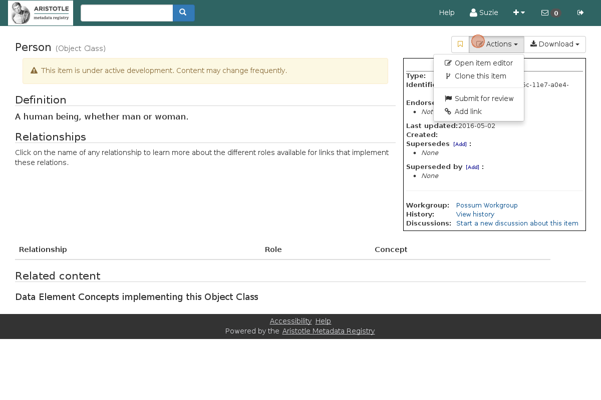
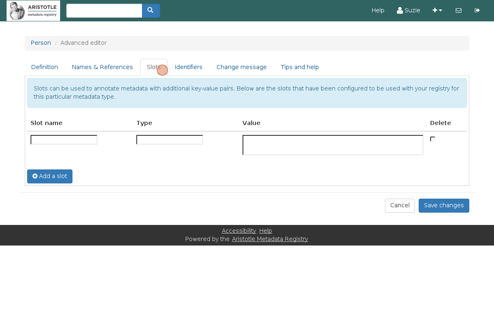
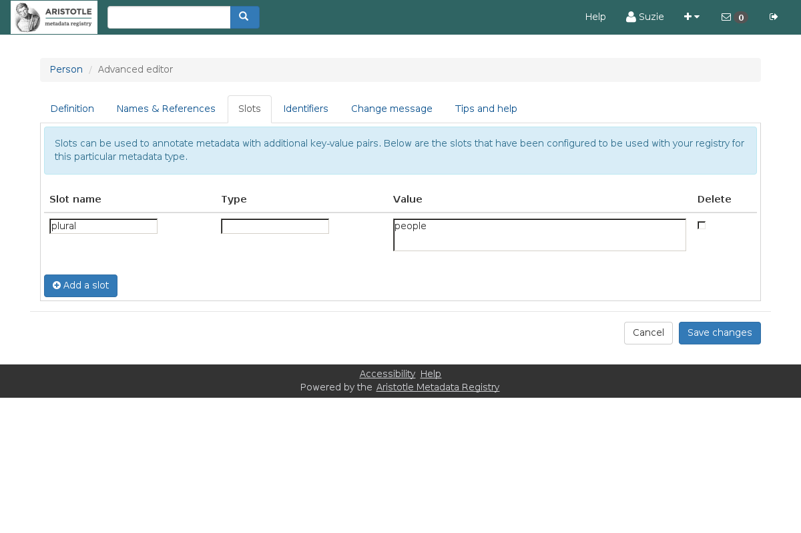
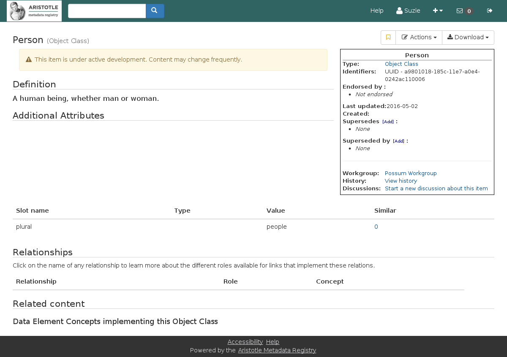

Creating New Information with Slots¶
Note
Slots can only be created when the Aristotle Slots add-on is installed.
Slots are a ways of adding extra detail to metadata beyond what’s available in the standard or Aristotle. Allows you to add extra context specific to a registry that describes a particular use.
The following steps are ways to capture this infomation for an existing metadata item.
Note
Only users with editing privledges for that metadata can create and edit slots for it.
To get started
   